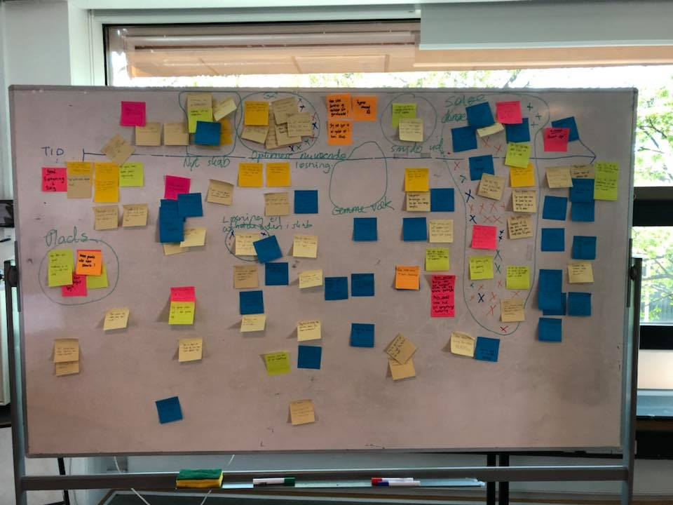
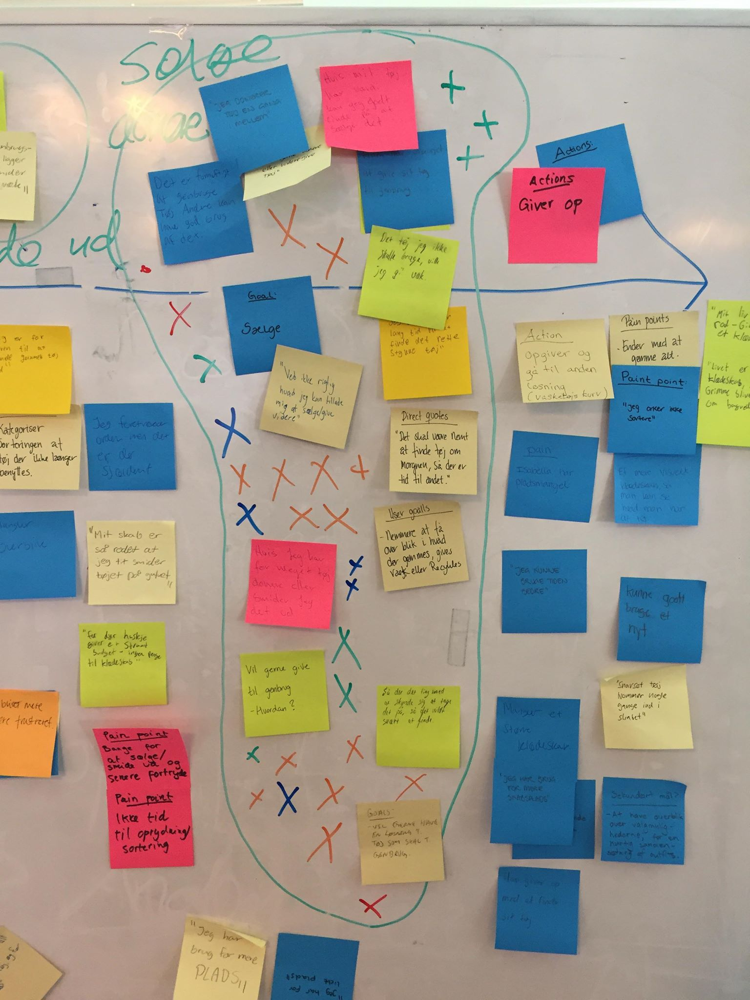

Experince map
Eget Experince map
Holdets Expeerince map
Holdets valgte emne
Pain Points og Goals

Problemstilling
Brugernes donere ikke deres tøj, som følge af mangle viden om mulige steder at sælge det og et kendskab til hvor man kan donere sit tøj og mangel på motivation til at få det gjort. Hvordan kan man forbedre disse forhold og sørge for at flere donere deres aflagte tøj.